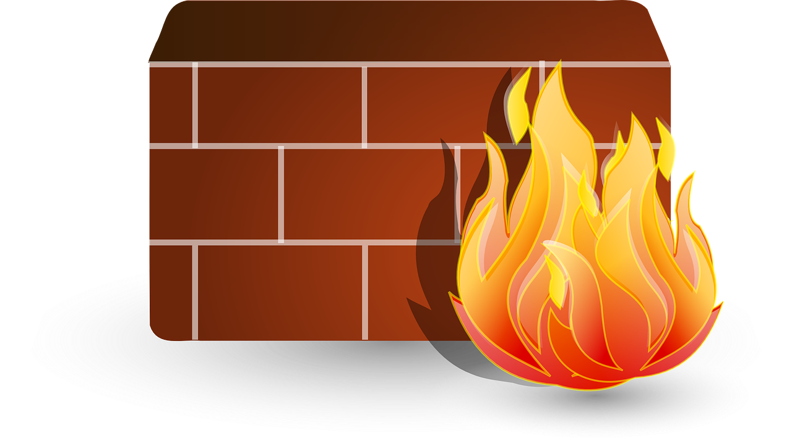

We believe security software like Kicksecure needs to remain Open Source and independent. Would you help sustain and grow the project? Learn more about our 11 year success story and maybe DONATE!
Rock Solid Security
Kicksecure is a secure by default OS always based on the latest security research.
Learn
Kicksecure is still in development and contributions are welcome.
Fully Featured with Advanced Security Components
Protection from Targeted Malicious Updates
Kicksecure update servers know neither the identity nor IP address of the user because
all upgrades are downloaded over Tor.
Kernel Self Protection Settings
Kicksecure uses strong Kernel Hardening Settings as recommended by the Kernel Self Protection Project
(KSPP).
Time Attack Protection
Kicksecure defeats time attacks on its users through Boot Clock Randomization and secure network time
synchronization using sdwdate.
No Open Ports by Default
Kicksecure provides a much lower attack surface since
there are no open server ports by default unlike in some other Linux distributions.
CPU Information Leak Protection (TCP ISN)
Without TCP ISN randomization, sensitive information about a system's CPU activity can be leaked through
outgoing traffic, leaving it vulnerable to side-channel attacks. tirdad prevents that.
Available for many virtualizers
With support for multiple virtualization options, trying out Kicksecure is easy. VMs also help contain and
prevent the spread of malware.
15 more amazing features →
Brute Force Defense
Kicksecure protects Linux user accounts against brute force attacks by using pam tally2.
Entropy Enhancements
Strong entropy is required for computer security to ensure the unpredictability and randomness of
cryptographic keys and other security-related processes.
Kicksecure makes encryption more secure thanks to preinstalled random number generators.
Live Mode
Kicksecure offers a much requested Live Mode. After the session all data will be gone.
Based on Linux
Linux is highly reliable, secure, free and open source. That's why Kicksecure is based on Linux.
Onion Website Option
Our website offers an alternative onion version. This offers a higher connection security between the
user and the server.
Risk Minimization
AppArmor profiles restrict the capabilities of commonly used, high-risk applications.
Strong Linux User Account Separation
Linux User Account Separation is not always a given on Linux systems. In Kicksecure it is.
Extensive Documentation
The more you know, the safer you can be: Extensive Kicksecure Documentation
Virus Protection
Kicksecure provides additional security hardening measures and user education for better
protection from virus attacks.
Console Lockdown
Legacy login methods can be a security risk. Console Lockdown disables them for improved security
hardening.

Vibrant Community
Our vibrant community features Forums, Contributors and RSS.

Based on Debian
Kicksecure is based on Debian, one of the most reliable Linux distributions.
Digitally signed releases
Downloads are signed so genuine Kicksecure releases can be verified.
Warrant Canary
A canary confirms that no warrants have ever been served on the Kicksecure project.

Swap File Creator
Running low on RAM isn't a security problem with swap-file-creator. It will create an encrypted swap
file.
SUID Disabler and Permission Hardener
SUID Disabler and Permission Hardener enhances system security by strengthening the isolation of Linux user accounts and more.
Freedom Values
12 Years of Success
For over 12 years as the creators of Whonix we have successfully protected our users from everyday
trackers
and even from high level attacks. And we're just getting started!
Open Source
We respect user rights to review, scrutinize, modify, and redistribute Kicksecure. This improves
security
and privacy for everyone.
Freedom Software
Kicksecure is Freedom Software and contains software developed by the Free Software Foundation
and the GNU Project.

Research and Implementation Project
Kicksecure is an actively maintained research project
making constant improvements; no shortcomings are ever hidden from users.
Fully Auditable
Kicksecure is independently verifiable by security experts and software developers around the world.
This improves security and privacy for everyone.
Complete respect for privacy and user freedom
Kicksecure respects data privacy principles. We don't make advertising deals or collect sensitive
personal
data.
Upcoming Security Enhancements
Linux Kernel Runtime Guard (LKRG) performs runtime integrity checking of the Linux kernel and detection
of
security vulnerability exploits against the kernel.
Hardened Malloc Light is a hardened memory allocator which can be used with many applications to
increase
security which is already installed by default and will be enabled by default.

sandbox-app-launcher is an application launcher that can start each application inside its own
restrictive sandbox. Each application runs as its own user, in a bubblewrap sandbox and confined by
AppArmor.
8 more Enhancements →
apparmor.d - Full system Mandatory Access Control (MAC) policy - "AppArmor for everything"
Untrusted Root User
Enforce kernel module software signature verification
Deactivate malware after reboot from non-root compromise

Hardened Linux Kernel
Post-quantum cryptography resistant signing of releases

Mount Options Hardening
Multiple boot modes for better security (user, live, secureadmin and superadmin)
Kicksecure update servers know neither the identity nor IP address of the user because
all upgrades are downloaded over
Tor by default.
Kicksecure uses strong Kernel Hardening Settings as recommended by the Kernel Self Protection Project (KSPP).
Time attacks
on Kicksecure users are defeated by
Boot Clock Randomization
and secure network time synchronization through
sdwdate
(Secure Distributed Web Date).
Kicksecure provides a much lower attack surface since
there are no open server ports by default unlike other Linux
distributions.
All unsolicited incoming connections are rejected.
Without TCP ISN randomization, sensitive information about a system's CPU activity can be leaked through outgoing
traffic, leaving it vulnerable to side-channel attacks. TCP ISN randomization
prevents that.

You can easily try Kicksecure by using
various virtualizers
, which enables security compartmentalization by running a Kicksecure VM on top of a Kicksecure host to isolate
malware and testing inside the VM.
Kicksecure protects Linux user accounts
against brute force attacks
by using pam tally2.
Strong entropy is required for computer security to ensure the unpredictability and randomness of cryptographic keys
and other security-related processes.
Kicksecure makes encryption more secure thanks to preinstalled random number
generators.
Booting into
VM Live Mode
is as simple as choosing Live Mode in the boot menu.
Alternatively Debian and perhaps other Debian-based hosts can boot their existing host operating
system into
Host Live Mode.
Linux is highly reliable and secure. Its open source and freedom paradigm sets it apart from other OS.
That's why Kicksecure
is based on Linux.
Our website offers an alternative onion version which offers a higher connection security between the user and the
server.
This is because connections over onions are providing an alternative end-to-end encryption which is independent from
flawed TLS certificate authorities
and the mainstream Domain Name System (DNS).

Our Firewall is configured specifically for securely using the Internet.
AppArmor profiles restrict the
capabilities of
commonly used, high-risk applications such as Tor Browser.
Learn more about our Linux User Account Separation
security-misc
.
The more you know, the safer you can be:
Extensive Kicksecure Documentation
Kicksecure provides additional security hardening measures and user education to provide better
protection from
viruses.
Console Lockdown
disables legacy login methods and thereby improves security hardening.

Our vibrant community features
Forums,
Contributors and
RSS
In oversimplified terms, Kicksecure is just a collection of configuration files and scripts.
Kicksecure is not a stripped down version of Debian; anything possible in "vanilla"
Debian GNU/Linux can be replicated in Whonix.
About Whonix
A
canary
confirms that no warrants have ever been served on the Kicksecure project.
Running low on RAM isn't a security problem.
swap-file-creator
will create an encrypted swap file.
Kicksecure is created by the developers of
Whonix,
the great privacy tool with over 12 years of success. We have successfully protected our users from
everyday
trackers
and even from
high level attacks
. Kicksecure is the rock solid foundation that Whonix is based on.
All the Kicksecure source code is
licensed under
OSI Approved Licenses.
We respect user rights to review, scrutinize, modify, and redistribute Kicksecure.
This improves security and privacy for everyone.
Kicksecure is
Freedom Software
and contains software developed by the
Free Software Foundation
and the
GNU Project.
Research
and Implementation Project: Kicksecure makes modest claims and is wary of overconfidence.
Kicksecure is an actively maintained research project making constant improvements; no
shortcomings
are ever hidden from users.
Kicksecure is independently verifiable by security experts and software developers around the world; you
don't have to trust developer claims.
This improves security and privacy for everyone.
Kicksecure respects data privacy principles. We don't make advertising deals or collect sensitive
personal data. There are
no artificial restrictions imposed on possible system configurations
.
The purpose of
SUID Disabler and Permission Hardener
is to enhance system security. It does this by strengthening the isolation of Linux user accounts,
implementing stricter file permission settings, and decreasing potential security vulnerabilities by turning off SUID-enabled binaries.